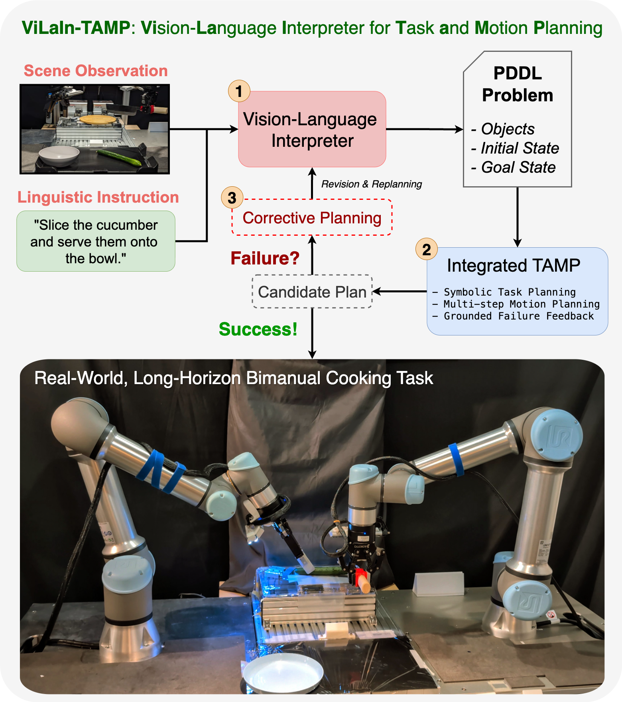

Jeremy Siburian
Hi! I'm Jeremy. I am a master's student in the Matsuo-Iwasawa Lab at The University of Tokyo, advised by Yusuke Iwasawa and Yutaka Matsuo. My research is broadly centered on robot learning. I currently work as a robotics research intern at OMRON SINIC X. Prior to UTokyo, I received my BEng in Mechanical Engineering at Waseda University under the supervision of Professor Shigeki Sugano.
Andy Zeng is a co-founder at Generalist, where he leads a small team working on self-improving Foundation models for robots. He received his Bachelors in Computer Science and Mathematics at UC Berkeley, and his PhD in Computer Science at Princeton. He is interested in building algorithms that enable machines to intelligently interact with the world and improve themselves over time. Andy received Best Paper Awards from HRI '24, CoRL '23, ICRA '23, T-RO '20, RSS'19, and has been finalist for paper awards at RSS '23, CoRL '20 - '22, ICRA '20, RSS '19, IROS '18. He led machine learning as part of Team MIT-Princeton, winning 1st place (stow task) at the worldwide Amazon Picking Challenge '17. Andy is a recipient of the Princeton SEAS Award for Excellence, Japan Foundation Paper Award, NVIDIA Fellowship, and Gordon Y.S. Wu Fellowship in Engineering and Wu Prize. His work has been featured in the press, including the New York Times, BBC, and Wired.
X (Twitter) G. Scholar LinkedIn Github CV
jeremy.siburian@weblab.t.u-tokyo.ac.jp

2025/10
I presented ViLaIn-TAMP in the SAFE-ROL Workshop at CoRL 2025. Thanks to everyone who stopped by the poster!2025/03
I graduated from Waseda University and started my master's degree at the University of Tokyo!2024/09
I was invited as a speaker at Tokyo AI (TAI) and gave a talk on long-horizon TAMP. See the speaker deck here.2024/05
Our cooking robot demo won the Best Video Award at the ICRA 2024 Cooking Robotics Workshop!Publications

Grounded Vision-Language Interpreter for Integrated Task and Motion Planning
Jeremy Siburian*, Keisuke Shirai*, Cristian C. Beltran-Hernandez*, Masashi Hamaya, Michael Görner, Atsushi Hashimoto
Workshop on Safe and Robust Robot Learning for Operation in the Real World at CoRL 2025
Project Page •
arXiv
TLDR: This paper introduces ViLaIn-TAMP, a hybrid framework that enables verifiable and interpretable language-guided robot planning for safer real-world deployment.
Integrated Task and Motion Planning for Real-World Cooking Tasks
Jeremy Siburian*, Cristian C. Beltran Hernandez*, Masashi Hamaya
SII 2025; ICRA 2024 Cooking Robotics Workshop
🎉 Best Video Award 🎉
OpenReview •
YouTube
TLDR: Our framework combines PDDLStream and MoveIt Task Constructor to enable multi-step manipulation planning, enhanced with RL-based cooking skills like fixturing, tip detection, and slicing.
Industry Projects
Robotic Bin Picking System with Tactile Sensing for Assembly Line Deployment
Jeremy Siburian
2023, Industry Project with Mitsubishi Fuso (Daimler Trucks Asia)
TLDR: Developed a robotic bin picking system for assembly line deployment using 3D tactile sensors for force control and slip detection. Managed an R&D budget of 1.5 million yen (Approx. $10k USD).
• I was born and raised in Medan, Indonesia.
• In my spare time, I enjoy exploring coffee shops, consuming anime/manga, and getting lost in sci-fi/fantasy.
• I enjoy doing various sports. I am "best" at basketball and currently pursuing snowboarding.
• My life has been deeply inspired by three things that I am overly invested in: Star Wars, Stephen Curry, and Haikyu.
My current short-term goal is to go to the US next year (2026) to watch Stephen Curry play in person before he retires!